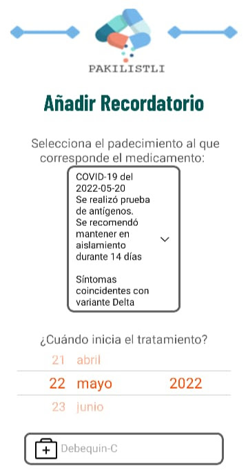
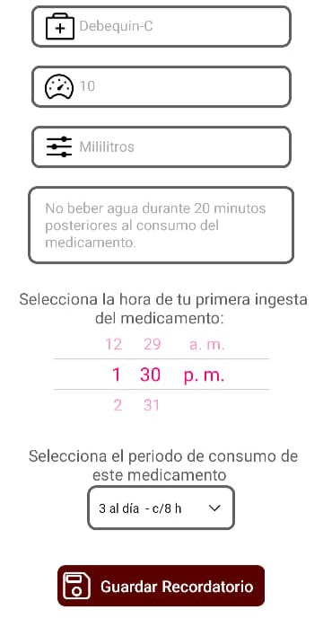
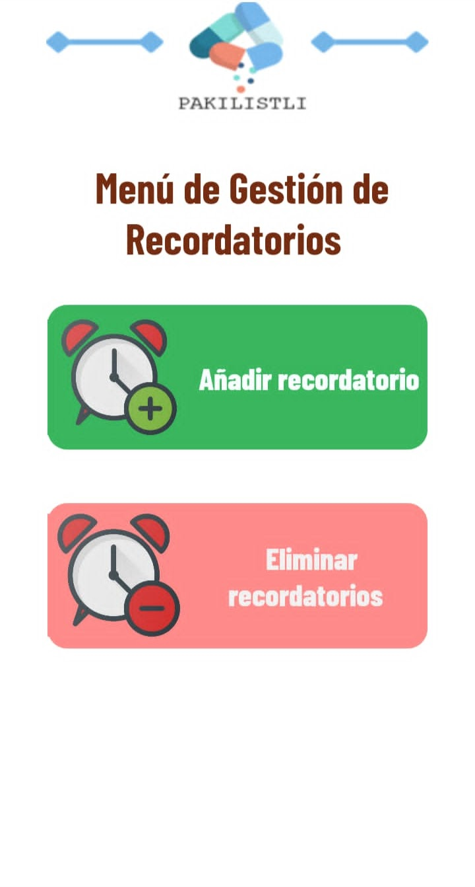
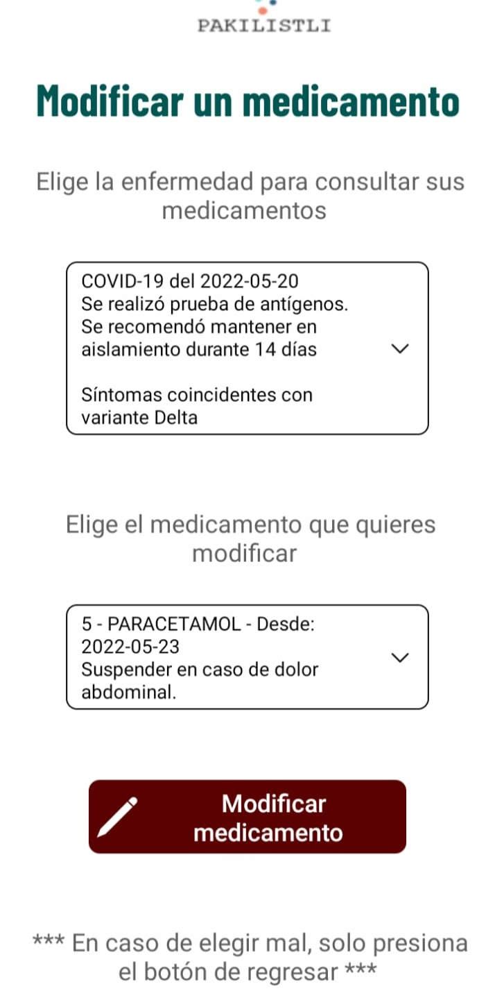
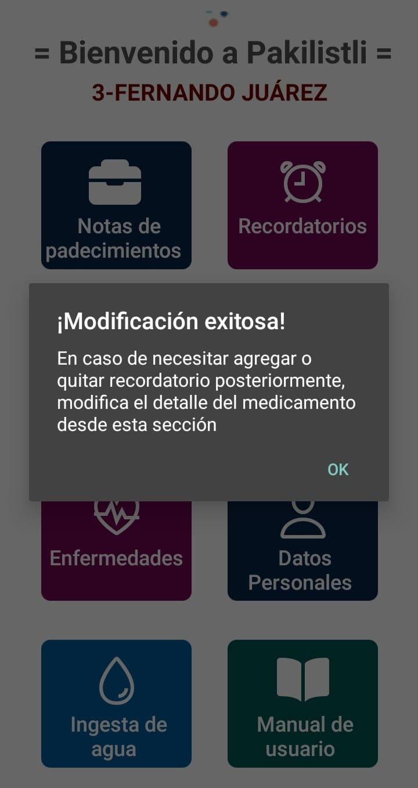
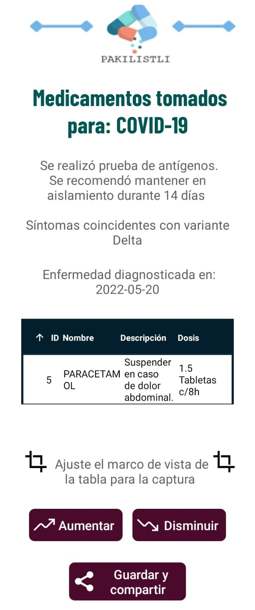
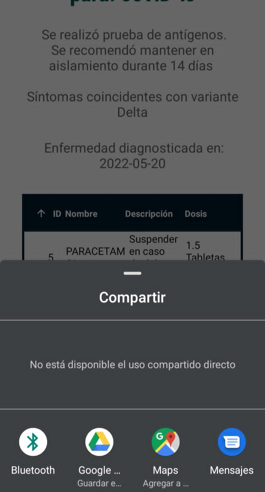
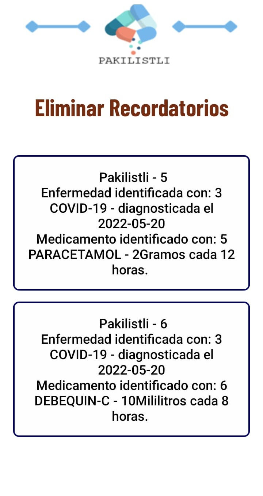
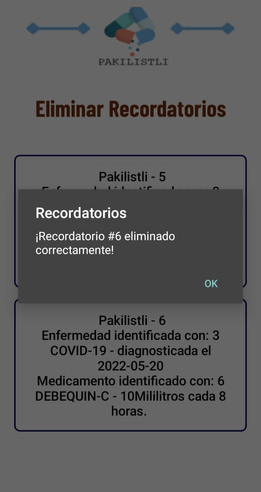

Registro de medicamento
Damos clic en el botón "medicamentos".
Una vez ingresamos en la venta es necesario llegar el formulario correspondiente.


En caso de ser necesario es posible gestionar los recordatorios de la toma de medicamentos en el siguiente menú.

Modificando la información de un medicamento.
En caso de que la dosis o características del medicamento cambian a lo largo del tratamiento es posible cambiar los datos registrados del mismo

Una vez que se ha llevado a cabo la modificación se muestra el siguiente mensaje.

Cómo obtener un resumen de mis medicamentos
Con Pakilistli es posible obtener un recorte de pantalla de todos los medicamentos registrados.

Así mismo, es posible compartir esta información a través de las diferentes aplicaciones compatibles.

Eliminando recordatorios
Para eliminar los recordatorios entramos en el Menú de gestión de recordatorios y seleccionar el recordatorio a eliminar.

Una vez que se ha eliminado el registro, se muestra el siguiente mensaje
